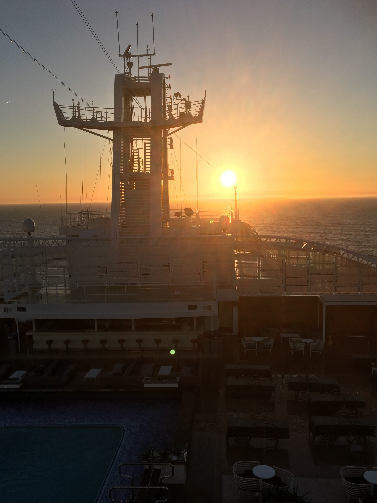
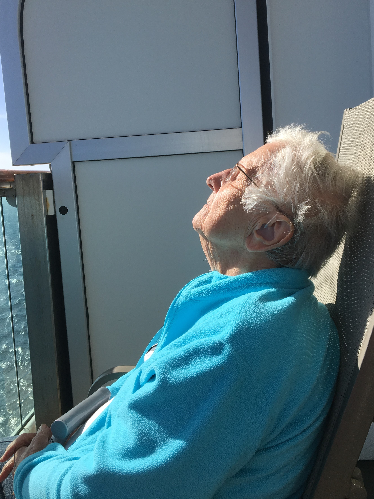

Britannia Cruise 2017
Thursday September 14th 2017

The first of 2 days at sea. Lovely sunshine but really quite windy. They didn't have to break out the motion
discomfort bags, but the 12 noon Officer of the Watch report said it was blowing a north westerly Force 7, which meant that the wind was
anywhere from 25mph - 40mph on the open decks, and we were warned to be careful when walking around the upper decks. Down by the pools on
the Lido Deck, it was sheltered from the wind, and the sun worshippers were all lying on their sun loungers. I found the best places to sit
were right at the front and right at the back of the ship. It was very blowy. Apart from the sunshine, it reminded me of being on the Isle
of Man Steam Packet boat sailing from Liverpool to the Isle of Man.
This was our 4th and final, Black Tie dinner. My people watching came to the conclusion that the Ladies had run out of imagination or maybe
run out of dress money. Most were smart but not overly dressy. We did pass one guy who was proudly wearing his medals in his white tuxedo,
but I have to say that socks, sandals and a tuxedo is a look I don't think will catch on.
Our special menu, had a choice of starters, soup and a sorbet, before a choice of main course and Dessert. I told Mum what the soup was,
and she did her trick of telling me what she thought I said – and she thought I'd said Willy based soup, much to the amusement of the people
on the next table. I quickly advised her it was bouillabaisse soup. This was also the opportunity for the chefs and waiters to do their
Parade.
Friday September 15th 2017

The final day at sea, and the newsletter was reminding people to cash in their casino chips, return their
library books, and collect their photos that had been taken on board at the various Black Tie dinners. We declined to go to the performance
of the Britannia Guest Choir. I had heard them rehearsing during the week!
A day of leisure, soaking up the last of the sunshine as be passed through a relatively calm Bay of Biscay. As we were in a suite, we got
to go off the ship exactly when we wanted, and after one last cooked breakfast and after steaming a total distance of 3,666 nautical miles,
we disembarked and headed home.